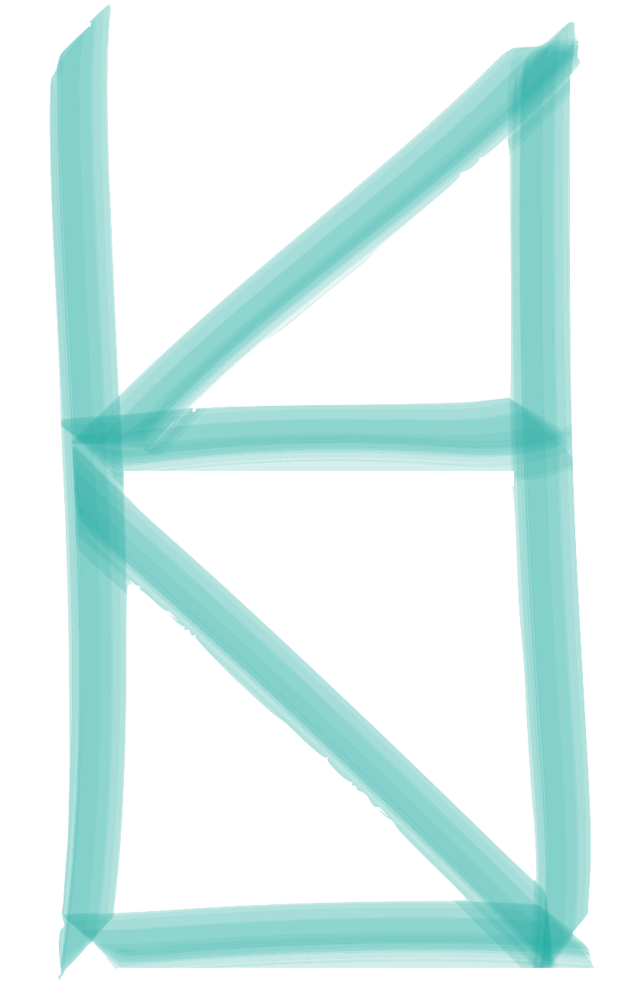

click on the symbol to the right to go back to the homepage! 
HI!
excuse me for the large font, but this is really the only time you'll see it. i'm haeon (pronounced like "hey, on;" once you repeat that a couple times, put the two words together and it will hopefully start to sound like my name; an alternative for those who want one is "hay yawn"), currently 14 and working under the pseudonym of "crumbly parmesan." ... i should give you some context. this is zoom world, where energy flies in and out faster than you can say "flies in and out," and we all have little names in the bottom left corners of our rectangular boxes. some of us also have profile pictures, which come to life when we are reluctant to show our faces. mine is a picture of kraft parmesan cheese, which is shown above.
by the way, i'm really happy to be in comp sci.